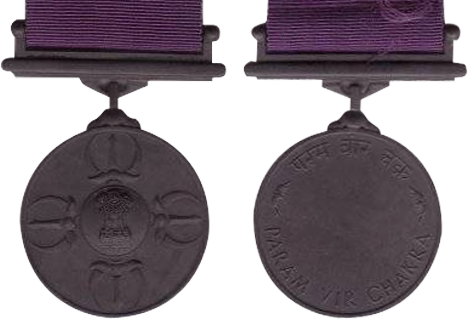
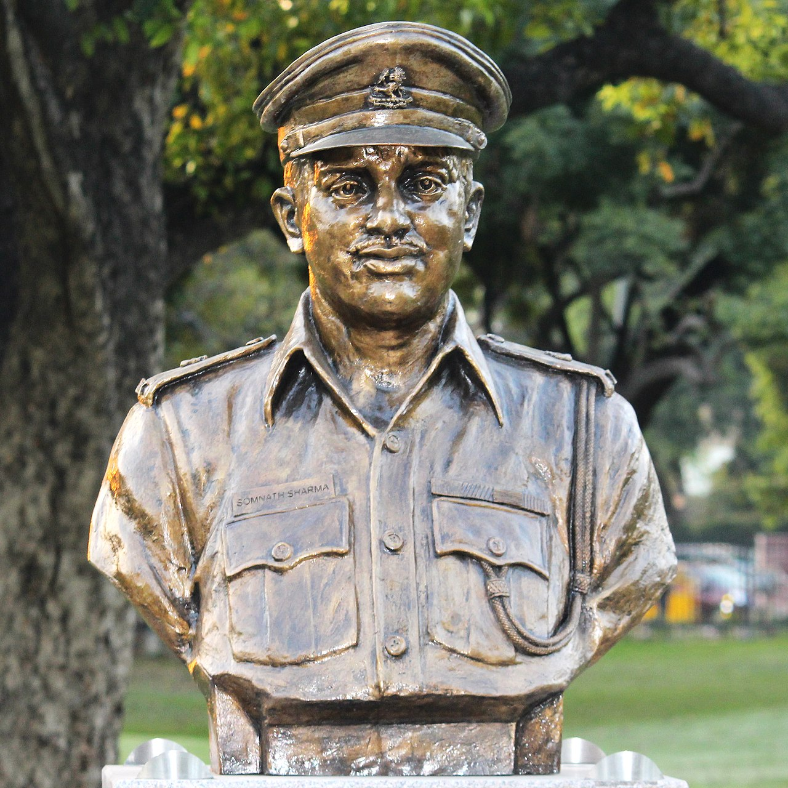
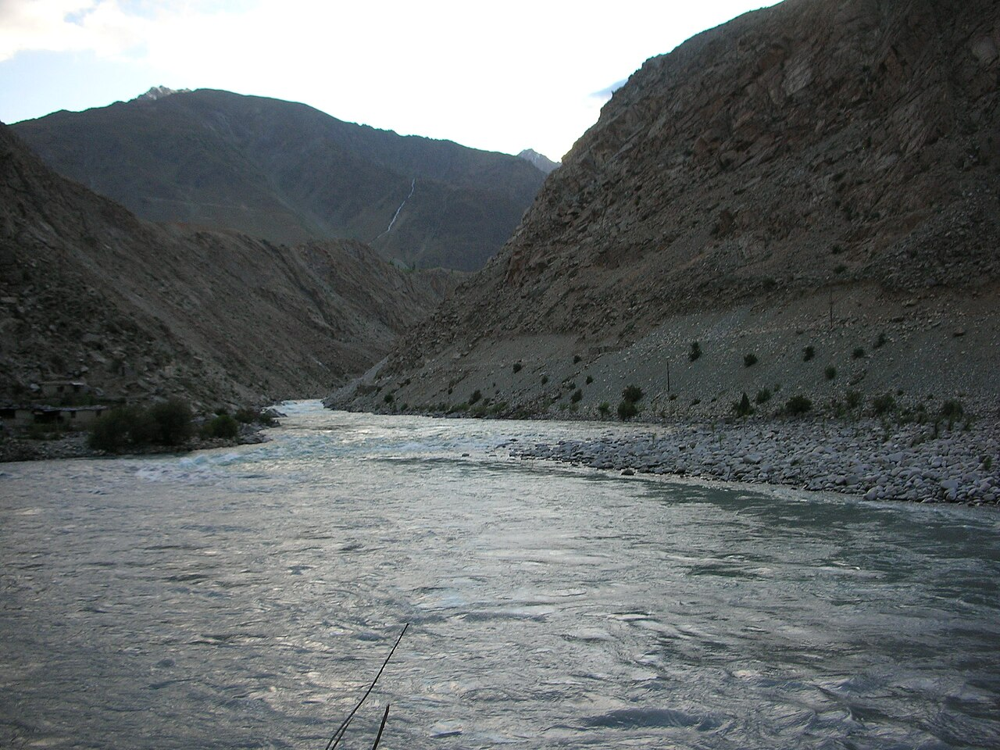

History · Valour
Param Vir Chakra: India's Highest Honour for Valour

Every nation invents a way to say thank you to the people who give it everything. India's highest way is a small bronze disc, thirty-five millimetres across, hung from a purple ribbon. It is called the Param Vir Chakra — the "Wheel of the Supreme Brave" — and in seventy-five years of independence it has been awarded only twenty-one times.[1] Fourteen of those times, the soldier did not live to wear it.
That arithmetic tells you almost everything. The Param Vir Chakra is not a medal for a good career or a long service. It is reserved for "the most conspicuous bravery or some daring or pre-eminent act of valour or self-sacrifice in the presence of the enemy" — most often, valour so extreme it costs the soldier their life.
The rarest honours are the ones a nation hopes it will almost never have to give.
A medal born of myth
The Param Vir Chakra was instituted on 26 January 1950, the day India became a republic, with effect backdated to 15 August 1947 so that the heroes of the very first war over Kashmir would be eligible.[1] Its design carries one of the most remarkable stories in Indian heraldry.
The medal was designed by Savitri Khanolkar — a woman born Eve Yvonne Maday de Maros to a Hungarian father and Russian mother, who fell in love with an Indian Army officer, moved to India, learned Sanskrit and Hindi, and came to know Indian scripture more deeply than most who were born to it. When the army needed a design for its supreme award, it turned to her.[1]
She reached for myth. The medal bears four replicas of the Vajra, the thunderbolt weapon of the god Indra, arranged around the national emblem. The Vajra recalls the legend of the sage Rishi Dadhichi, who gave up his own bones so that the gods could forge a weapon to defeat evil — the ultimate act of self-sacrifice for a cause greater than oneself.[1] There could be no more fitting symbol for a medal earned, again and again, by men who laid down their lives. In a quiet turn of history, the first soldier to win the medal she designed was related by marriage to her own family.
The first name: Major Somnath Sharma
The very first Param Vir Chakra was awarded posthumously to Major Somnath Sharma of the 4th Battalion, Kumaon Regiment, for the Battle of Badgam on 3 November 1947.[1] Holding a thin line near Srinagar airfield against a far larger force of raiders, Sharma's company was the only thing standing between the enemy and the airstrip that kept Kashmir connected to the rest of India.
With his hand in a plaster cast from an earlier injury, he moved under fire filling magazines for his men, calling in support, refusing to fall back. His last radio message has become part of the army's memory: that the enemy was only fifty yards away, that he was heavily outnumbered, but that he would not withdraw. He was killed when a mortar shell struck the ammunition he was carrying. The airfield held. So began the roll of the Param Vir.
Twenty-one names
Of the twenty-one recipients, twenty served in the Indian Army and one in the Indian Air Force — Flying Officer Nirmaljit Singh Sekhon, the only airman so honoured, for a lone dogfight defending Srinagar in the 1971 war.[1] The names span every major conflict of independent India: the wars of 1947–48, 1962, 1965, and 1971, the peacekeeping mission in Sri Lanka, the Siachen Glacier, and Kargil.
Read together, the citations form a strange and humbling literature — a single man charging a bunker, a wounded officer leading one last assault, a soldier fighting on after injuries that should have stopped him. The medals sit in glass cases now. The acts behind them refuse to.
Names across the wars
A few of those names have passed into legend. In the 1965 war, Company Quartermaster Havildar Abdul Hamid of the 4th Grenadiers knocked out several Pakistani Patton tanks with a recoilless gun at the Battle of Asal Uttar before he was killed — earning a posthumous Param Vir Chakra and helping blunt one of the largest armoured thrusts of the war.[2] In the 1971 war that liberated Bangladesh, Lance Naik Albert Ekka of the Brigade of the Guards single-handedly silenced enemy bunkers at the Battle of Gangasagar, fighting on despite mortal wounds, and was likewise honoured posthumously.[2]
What strikes me, reading these citations one after another, is how ordinary the men were before the moment that made them legendary — a quartermaster, a lance naik, a young lieutenant fresh from the academy. The Param Vir Chakra is not the story of supermen. It is the story of how far an ordinary person can go when everything is asked of them at once, and they choose to give it.

Kargil's four
The most recent Param Vir Chakras were earned in the summer of 1999, in the high, frozen ridges of the Kargil War — Operation Vijay. Four were awarded, two of them posthumously:[1]
- Captain Vikram Batra, 13 Jammu & Kashmir Rifles — who recaptured Point 4875 and died leading the final charge, his battle-cry "Yeh Dil Maange More" now woven into the national memory (posthumous).
- Lieutenant Manoj Kumar Pandey, 1/11 Gorkha Rifles — who cleared a series of enemy positions on Khalubar before falling to his wounds (posthumous).
- Grenadier Yogendra Singh Yadav, The Grenadiers — who, gravely wounded, climbed a sheer cliff face under fire to assault Tiger Hill, and survived.
- Rifleman Sanjay Kumar, 13 Jammu & Kashmir Rifles — who charged an enemy position on Point 4875 and lived to tell of it.
Two of these heroes are still among us; two are names on memorial walls. That, again, is the medal's terrible balance.

What the medal asks of us
The medal itself is studiously plain — a circular bronze disc just thirty-five millimetres across, the national emblem at its centre ringed by the four vajras, hung from a simple purple ribbon.[1] There is no gold, no jewel, no flourish. That restraint is the point. The honour is not in the metal but in what the metal stands for; an ornate medal would only cheapen a thing that is meant to be beyond price. India has chosen, again and again, to mark its supreme courage with something a soldier could close inside a single fist.
There is a convention that everyone, regardless of rank, salutes a recipient of the Param Vir Chakra in ceremonial uniform.[1] It is a beautiful inversion of ordinary hierarchy: for one moment, the highest in the room defers to the bravest.
I write often about soldiers, and I have come to believe that gallantry awards do something poems also try to do — they take an act too large to hold and give it a shape we can carry. A medal cannot contain Somnath Sharma's last stand or Vikram Batra's last climb. But it can keep the question those acts pose alive in us: what would I be willing to give, and for whom? The Param Vir Chakra has been given twenty-one times. The least we owe its recipients is to remember why. To learn their names is not hero-worship; it is gratitude made specific. And gratitude, when it is specific enough, becomes a kind of inheritance — passed from those who fell to those of us still lucky enough to be free.
Sources & further reading
- "Param Vir Chakra," Wikipedia — institution date, design and symbolism, list of recipients, and Kargil awards.
- Gallantry Awards portal, Ministry of Defence & Ministry of Home Affairs, Government of India — gallantryawards.gov.in (official citations of recipients).
- Indian Army, official records on the Param Vir Chakra and Major Somnath Sharma — indianarmy.nic.in.
Image credit. "Param Vir Chakra medal," Government of India, Public Domain, via Wikimedia Commons.